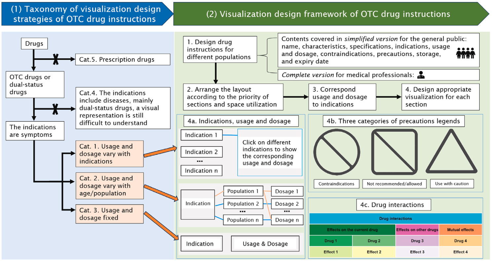

Enhance comprehension of over-the-counter drug instructions for the general public and medical professionals through visualization design

(opens in new tab)
Venue. CG (2026)
Materials.
DOI(opens in new tab)
Abstract. Drug instructions are crucial for guiding the rational use of medication. We conduct a visualization design study to enhance the comprehension of over-the-counter (OTC) drug instructions, targeting both the general public and medical professionals. We devise two tailored drug instruction designs for different audience groups through an iterative design process. A controlled user study reveals that our design outperforms traditional text-based instructions in terms of response time and usability, and the availability of two versions is also found to be beneficial. This study also motivates a taxonomy based on a systematic classification of OTC drug instructions sampled from an official drug database, which received positive expert feedback. Finally, this study summarizes a workflow for a visualization design strategy based on our design exploration and user study feedback, which can be generalized to other OTC drug instructions.
Link to this page: